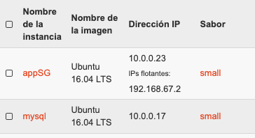
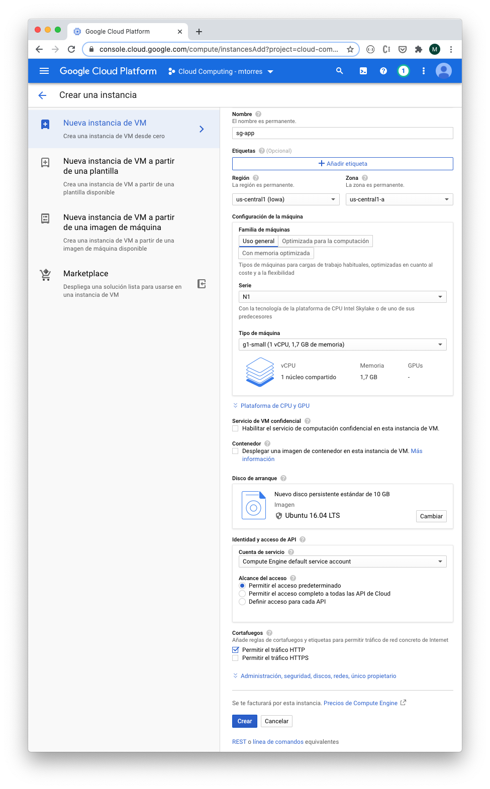
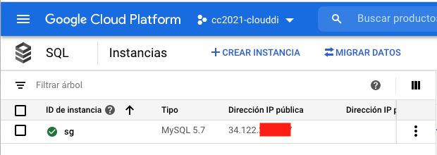

Resumen
En este tutorial se muestra uno de los ejemplos básicos y habituales de desarrollo de aplicaciones en entornos cloud. Se trata de crear una instancia dedicada a la base de datos y otra instancia dedicada a la aplicación. Se verá también la importancia del uso de variables de entorno y los ejemplos se ilustrarán en OpenStack-DI y Google Cloud.
-
Crear instancias con scripts de configuración incial.
-
Crear soluciones que usen varias máquinas virtuales.
-
Usar variables de entorno para evitar exponer datos sensibles.
1. Introducción
En el modelo IaaS (Infrastucture as a Service) de cloud computing el proveedor proporciona a los usuarios recursos de cómputo como servidores, almacenamiento y redes virtuales. Entre las funciones principales destacan:
-
En lugar de adquirir hardware directamente se hace un pago por uso de infraestructura.
-
La infraestructura es escalable en función de las necesidades de procesamiento y almacenamiento.
-
La infraestructura está replicada por lo que no existe un punto único de fallo.
2. Descripción del escenario
En este tutorial se ilustra cómo crear una aplicación que muestra un listado de artículos deportivos obtenidos de una base de datos MySQL. Se trata de desplegar lo siguiente:
-
Una máquina virtual con un servidor MySQL y una base de datos de ejemplo. La base de datos se inicializará a través de un script.
-
Una máquina virtual con un servidor Apache, intérprete PHP y la aplicación que muestra el listado de productos deportivos recuperados de la base de datos de la máquina virtual anterior.
3. Despliegue en OpenStack-DI
OpenStack-DI ofrece Infraestructura como servicio dentro de la red de la UAL. Para conexiones desde el exterior es necesaria una conexión VPN.
3.1. Requisitos previos
-
Cuenta creada en OpenStack-DI
-
Proyecto OpenStack con la infraestructura básica de red configurada. (Tutorial Configuración de infraestructura básica de red. En OpenStack-DI la red externa se denomina
externa) -
Disponer de un par de claves SSH. (Tutorial Generación de claves SSH)
-
Tener las claves SSH registradas en OpenStack. (Tutorial Registro de claves SSH en OpenStack)
-
Tener las reglas de seguridad configuradas (puerto 22 para SSH, 80 para Apache). (Tutorial Configuración de las reglas de seguridad)
3.2. Crear instancia MySQL
Seleccionar Compute | Instances en el menú del proyecto. A continuación pulsar Lanzar instancia. Completar los valores siguientes en los pasos del cuadro de diálogo:
-
En el paso
Detallesintroducir el nombre de la instancia (p.e.mysql). Dejar los valores de zona de disponibilidad anovaycounta 1.NoteLas zonas de disponibilidad en OpenStack permiten agrupar los servidores físicos que forman el cloud privado. Actualmente sóla hay definida una única zona, denominada
nova. -
En el paso
Origense indica cuál es la imagen que se toma de base para crear la instancia o máquina virtual. En este ejemplo seleccionar en el desplegableSeleccionar Origen de arranqueel valorImagen. En la opciónCrear nuevo volumenseleccionarNo. Seleccionar la imagenUbuntu 16.04 LTS. El script de instalación, configuración e inicialización de una base de datos que se proporciona está probado en Ubuntu 16.04 LTS -
En el paso
Saborse selecciona el tamaño que tendrá la instancia en términos de CPU, RAM y disco. Seleccionar el saborsmall. -
En el paso
Redesse establece la comunicación que tendrá la instancia con el exterior. Seleccionar la red del proyecto si no está seleccionada ya. -
Saltar el paso
Network ports. -
En el paso
Grupos de seguridaddebe estar seleccionadodefault. Usaremos este grupo para definir las reglas de acceso a las máquinas virtuales creadas. Otra opción es tener grupos de seguridad diferentes para cada configuración de puertos de cada máquina virtual evitando tener abiertos puertos innecesarios y haciendo un control más fino. -
En el paso
Par de clavesdebe estar seleccionada la clave pública SSH subida a OpenStack-DI. Esta clave será inyectada a la instancia en el momento de su creación y permitirá que nos conectemos a ella desde un cliente SSH donde esté la clave privada SSH que empareje con ella. -
En el paso
Configuraciónse puede pasar un script que configure la instancia de forma automática tras su creación. En este caso incluiremos este script de instalación de MySQL en Ubuntu con el password que se indica e inicializará una base de datos denominada SG (Sporting Goods) a partir de este script de inicialización de la base de datos de artículos deportivos. -
Pulsar
Lanzar instanciaNoteA pesar de que la instancia esté en estado
Ejecutandotardará algunos minutos en estar disponible. OpenStack establece el estadoEjecutandocuando ha iniciado la máquina virtual. Sin embargo, OpenStack está ajeno al proceso de configuración mediante el script de inicialización. Puedes consultar su evolución en el desplegable de la derecha de la máquina virtual seleccionadoVer logy luego pulsandoVer log completo
La instancia con MySQL estará creada y configurada. Por ahora no la probaremos. La probaremos más adelante desde otra máquina para comprobar que la base de datos SG admite conexiones desde fuera.
3.3. Crear instancia PHP
En este apartado crearemos una máquina virtual configurada con lo necesario para servir la aplicación SG. Se trata de configurar un servidor Apache, PHP y clonar el repositorio donde se encuentra la aplicación.
Comenzaremos creando una nueva instancia con los mismos requisitos previos y con los mismos parámetros usados para crear la máquina virtual de MySQL (misma imagen, mismo sabor, redes, clave SSH). Sólo habrá dos diferencias:
-
El nombre de la máquina virtual será
appSG -
El script de inicialización será el siguiente:
#!/bin/bash
apt-get update (1)
apt-get install -y apache2 (2)
sudo apt-get install -y php libapache2-mod-php php-mysql php-mcrypt (3)
sed -i 's/#extension=php_mysqli.dll/extension=php_mysqli.dll/g' /etc/php/7.0/apache2/php.ini (4)
sudo chgrp -R www-data /var/www (5)
sudo chmod -R 775 /var/www
sudo chmod -R g+s /var/www
sudo useradd -G www-data ubuntu
sudo chown -R ubuntu /var/www/
git clone https://github.com/ualmtorres/SGApp.git /var/www/html/SGApp (6)-
Actualización del repositorio de paquetes
-
Instalación de Apache
-
Instalación de PHP y los paquetes necesarios
-
Activar MySQLi en PHP
-
Configuración de los permisos de la carpeta
/var/wwwpara el usuarioubuntu -
Clonar el repositorio que contiene el código de la aplicación
|
Note
|
Este script usa el usuario |
Asignar una dirección IP flotante y abrir la aplicación en http://<ip>/SGApp. Pasados unos instantes para dar tiempo a que se complete el script de inicialización (Ver log completo de la instancia para ver el progreso) la aplicación estará disponible pero no mostrará datos.
La aplicación no muestra datos porque las credenciales de acceso a la base de datos no están configuradas en el repositorio que se ha clonado. En el repositorio están configuradas mediante variables de entorno.
$conexion = mysqli_connect(getenv('MYSQL_HOST'), getenv('MYSQL_USER'), getenv('MYSQL_PASSWORD'), "SG");|
Tip
|
Es una buena práctica no introducir credenciales ni valores sensibles en el código. Esos valores podrían quedar expuestos en el historial de versiones del repositorio. Una forma de hacer esto es mediante el uso de variables de entorno. Así, los valores no quedan expuestos en el código y en función de donde se esté ejecutando (producción, desarrollo, …) se configurarán las variables de entorno con los valores adecuados para cada entorno. |
Para configurar las variables de entorno en la máquina virtual de la aplicación (sgapp) hay que seguir los pasos siguientes:
-
Obtener la dirección IP fija de la máquina virtual
mysql. En el ejemplo de la figura sería10.0.0.17. Lbasea comunicación entre la máquina virtual de la aplicación y la de la base de datos se realizará por la red del proyecto. No es necesario crear una IP pública para la máquina virtual de MySQL por este motivo. -
Iniciar sesión SSH en la dirección IP de la máquina virtual
sgApp. En el ejemplo de la figura sería192.168.67.2. -
Editar el archivo
/etc/apache2/envvarspara configurar las variables de entorno para la configuración de cada uno (los valores mostrados aquí son propios a la configuración de host, usuario y contraseña seguidos en el tutorial. Pueden diferir)... export MYSQL_HOST=10.0.0.17 export MYSQL_USER=root export MYSQL_PASSWORD=secret -
Reiniciar el servidor Apache
$ sudo service apache2 restart
El resultado final debe ser algo así.
3.4. Posibles soluciones a posibles problemas
-
Ante problemas con la base de datos (no se sabe si se ha instalado correctamente, no se ha creado la base de datos SG, …), asignar una dirección IP flotante, iniciar sesión SSH y ver el estado de la base de datos con el cliente
mysqlde la propia máquina virtual. -
Para saber si la base de datos SG es accesible desde fuera, instalar el cliente en la máquina virtual
sgAppconsudo apt-get install mysql-clienty probar la conexión conmysql -h <ip-mysql> -u root -p. -
Revisar los grupos de seguridad para que los puertos 80 (HTTP) y 22 (SSH) estén abiertos al exterior.
-
Revisar las credenciales en las variables de entorno de
/etc/apache2/envvarsy reiniciar Apache consudo service apache2 restart. -
Activar la presentación de errores PHP modificando el valor de
display_errors = Onen el archivo/etc/php/7.0/apache2/php.iniy reiniciando Apache después consudo service apache2 restart.
4. Despliegue en Google Cloud
Compute Engine propociona IaaS en Google Cloud. Veamos cómo hacer en Google Cloud el mismo despliegue de la sección anterior (base de datos SG en MySQL y otra máquina virtual con la aplicación que interactúa con la base de datos).
4.1. Requisitos previos
-
Cuenta creada en Google Cloud
-
Proyecto creado para la asignatura
4.2. Crear instancia MySQL
Seguir el tutorial Creación de una base de datos MySQL en Google Cloud Platform para preparar una instancia MySQL inicializada con la base de datos SG y que sea accesible desde Internet.
4.3. Crear instancia PHP
En este apartado crearemos una máquina virtual configurada con lo necesario para servir la aplicación SG. Se trata de configurar un servidor Apache, PHP y clonar el repositorio donde se encuentra la aplicación.
-
En el Menú de navegación, en la sección
COMPUTEseleccionarCompute Engine | Instancias de VM. -
En la barra de herramientas pulsar sobre
Crear instancia. -
Asignarle el nombre
sg-appdejando la región y la zona predeterminadas. -
En la sección
Configuración de la máquinaseleccionar laN1en el desplegableSerieyg1-small(1 vCPU y 1.7 GB de RAM) en la lista desplegableTipo de máquina. -
En la sección
Disco de arranquecambiar la imagen aUbuntu 16.04 LTSy mantener el disco en 10 GB de tamaño. -
En la sección
Cortafuegosseleccionar la casilla de verificaciónPermitir el tráfico HTTP. -
Desplegar
Administración, seguridad, discos, redes, único propietario -
En la pestaña
Administración, en el apartadoSecuencia de comandos de inicioincluir el script siguiente:
#!/bin/bash
apt-get update (1)
apt-get install -y apache2 (2)
sudo apt-get install -y php libapache2-mod-php php-mysql php-mcrypt (3)
sed -i 's/#extension=php_mysqli.dll/extension=php_mysqli.dll/g' /etc/php/7.0/apache2/php.ini (4)
git clone https://github.com/ualmtorres/SGApp.git /var/www/html/SGApp (5)-
Actualización del repositorio de paquetes
-
Instalación de Apache
-
Instalación de PHP y los paquetes necesarios
-
Activar MySQLi en PHP
-
Clonar el repositorio que contiene el código de la aplicación
Unos instantes después la instancia estará creada y tendrá una IP externa. Al hacer clic sobre la IP externa aparecerá la página de inicio de Apache.
Al añadir /SGApp a la dirección IP en el navegador se mostrará la aplicación pero sin datos.
La aplicación no muestra datos porque las credenciales de acceso a la base de datos no están configuradas en el repositorio que hemos clonado. En el repositorio están configuradas mediante variables de entorno.
$conexion = mysqli_connect(getenv('MYSQL_HOST'), getenv('MYSQL_USER'), getenv('MYSQL_PASSWORD'), "SG");Para configurar las variables de entorno en la máquina virtual de la aplicación (sg-app) hay que seguir los pasos siguientes:
-
Obtener la dirección IP pública de MySQL (En el tutorial MySQL se configuró con una IP pública y acceso desde cuaqluier IP). Está disponible en el Menú de navegación, sección
BASES DE DATOS | SQL. En el ejemplo de la figura sería34.122.xxx.xxx -
Iniciar sesión SSH en la máquina virtual
sg-appdisponible enCompute Engine | Instancias de VMdel Menú de navegación. Editar el archivo/etc/apache2/envvarspara configurar las variables de entorno para la configuración de cada uno (los valores mostrados aquí son propios a la configuración de host, usuario y contraseña seguidos en el tutorial)... export MYSQL_HOST=34.122.xxx.xxx export MYSQL_USER=xxx export MYSQL_PASSWORD=xxx -
Reiniciar el servidor Apache
$ sudo service apache2 restart
El resultado final debe ser algo así.